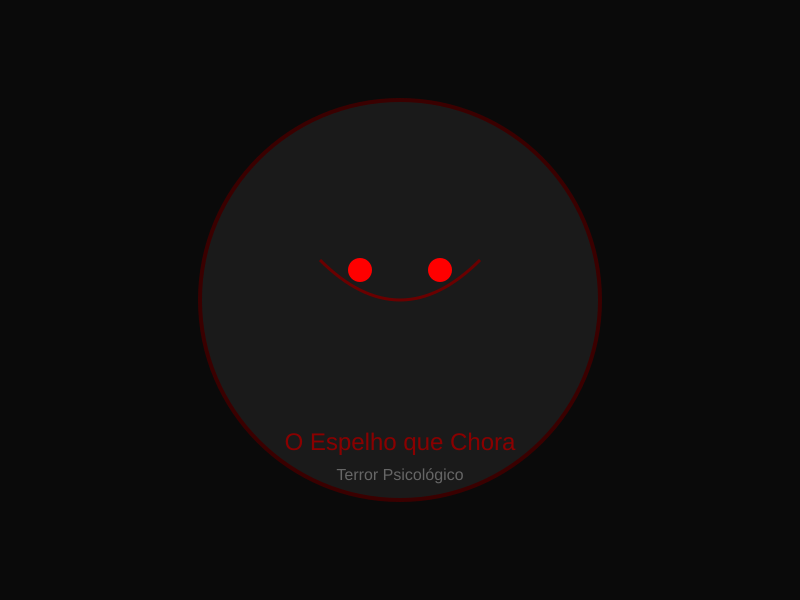

O espelho não refletia mais nada. Não mostrava o quarto, não mostrava a porta, não mostrava Clara. Apenas uma superfície cinzenta, opaca, como cinza sobre cinza, sem profundidade, sem fim.
Ela se sentou no chão do banheiro e encostou as costas na pia fria. O ar não cheirava a nada. Nem a sabão, nem a mofo, nem a água parada. Nada. Apenas vazio.
Clara olhou para o próprio rosto no vidro. Ou tentou. Não havia rosto. Apenas uma mancha escura onde os olhos deveriam estar, e uma linha reta onde a boca deveria se abrir. Ela piscou. A mancha piscou junto, com o mesmo atraso de sempre.
O vidro não fazia barulho quando ela tocou. Não era frio, não era quente. Era apenas ausência. Ela pressionou a palma contra a superfície e sentiu nada — nem a textura do vidro, nem a própria pele. Nada.
Algo se moveu dentro do espelho. Não era um reflexo. Era o próprio espelho se mexendo, como se o vidro estivesse respirando. Uma fenda se abriu no centro, fina, preta, sem luz atrás. Não havia escuridão ali, apenas ausência de tudo.
Clara não gritou. Não havia som para gritar. Ela se aproximou, devagar, e colocou o rosto perto da fenda. Dentro não havia nada. Não havia paredes, não havia chão, não havia céu. Apenas cinza. Uma imensidão de cinza vazio.
Ela colocou a mão dentro da fenda. O braço desapareceu. Não doeu. Não houve resistência. Apenas nada. Ela puxou o braço de volta. Ele estava lá, mas não parecia mais dela. Era apenas um membro cinza, sem cor, sem vida.
O espelho parou de respirar. A fenda fechou. A superfície voltou a ser opaca, cinza, vazia. Clara ficou ali, sentada no chão, olhando para o próprio reflexo que não era mais seu.
Ela não sabia mais se estava dentro do banheiro ou dentro do espelho. Não fazia diferença. Ambos eram iguais: vazios, incolores, silenciosos.
E o espelho não chorava. O espelho nunca chorou. O espelho apenas existia, como ela existia, sem cor, sem som, sem fim.
Espaço reservado para vídeo do conto. Adicione o arquivo em assets/video/ e descomente a tag <video> acima.